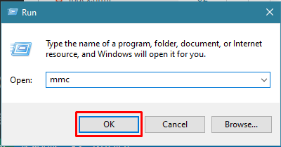
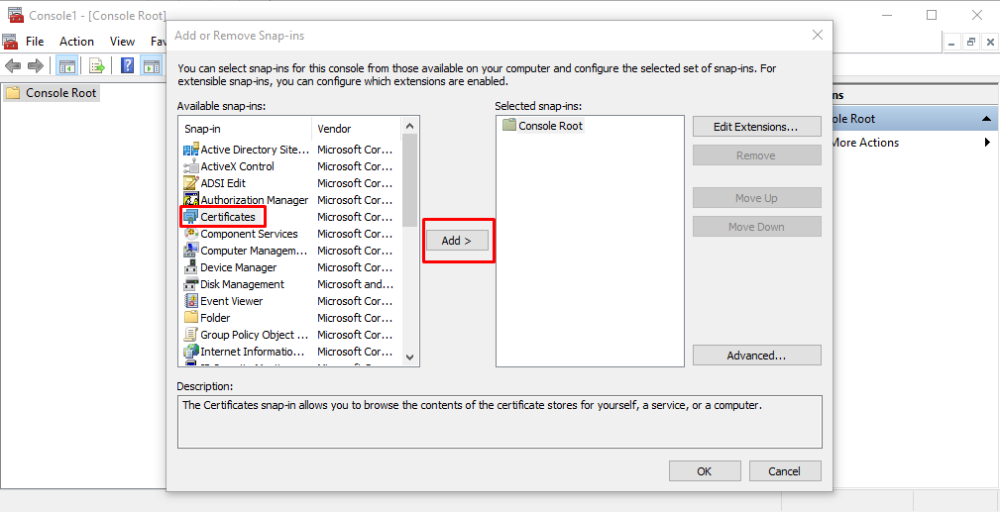
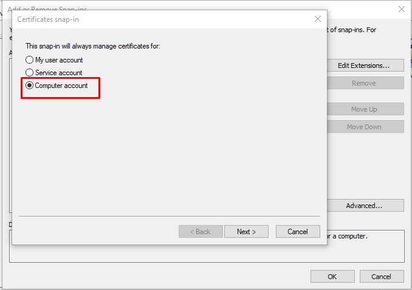
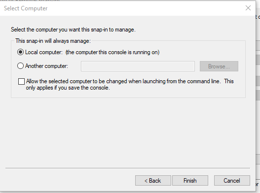
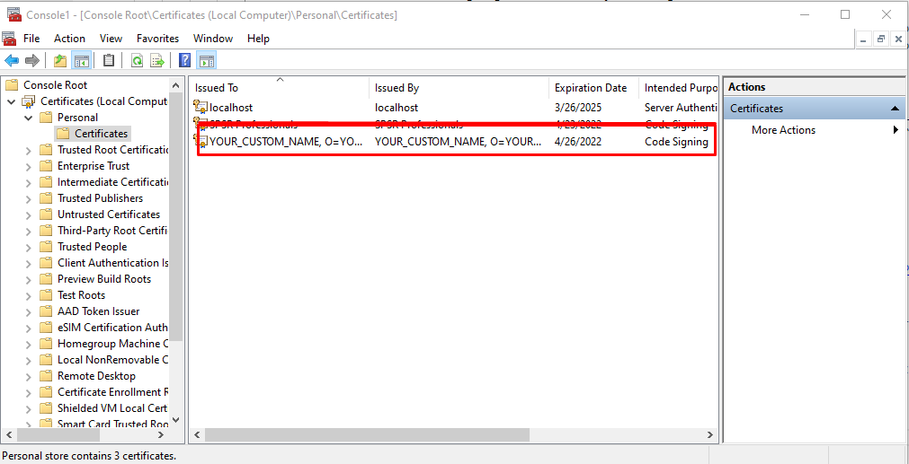

The signing certificate could be used as add publisher info into the desktop application created by c#/vb.net or anything else. In this article we will see how can we export a already added certificate into windows certificate authority(CA). To create a new self signed certificate refer our article: how to create self signed signature certificate in windows
First you have to click on start button and type "run". When the Run prompt appear type "mmc" in it and hit enter.

When the microsoft management console window will appear you might see only Console Root folder at left panel of the console. To show the installed certificates click on File menu -> Add/Remove Snap in...In the Add / Remove window select the "Certificates" from available snaps-in and click on "Add" button

After click "Ok" select the "Computer account" from Certificates snap in window and click "Next"

Select "Local Computer" from select computer window and "Finish" the process

You will see the "Certificates" folder in Console root. Expand Personal folder and click on certificates, in the right panel you will see the created certificate.

Right click on the certificate you want to export, All tasks -> export.
In the export wizard select Yes export the private key
On next screen select "Personal Information Exchange -PKCS #12 (.PFX)"
In the security screen check the Password check box and fill password and confirm password field. For the encryption choose AES256-SHA256
In the next screen browse the location from your machine where you want to save the .pfx file -> click Next and Finish.
You will get the certificate.pfx file in the location you selected